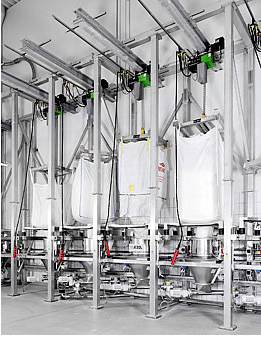
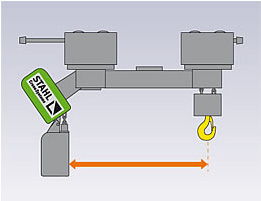

Links das novidades:
- - Talha de duplo gancho STAHL STD
- - Talha STAHL ST Big-Bag: elevação de cargas volumosas sem obstruções
- - Talha STAHL RadioMOVEit: elevação ergonômica e segura
Talha de duplo gancho STAHL STD Vario: Transporte seguro de cargas de diferentes comprimentos.

Usando seus muitos anos de experiência e tecnologia inteligente, os engenheiros de R&D da STAHL trabalharam juntos próximos aos clientes para desenvolver ainda mais a talha de corrente dupla STD. O resultado: a talha de corrente dupla STD Vario com distância ajustável eletricamente entre ganchos, um maior ganho em segurança e flexibilidade no trabalho. O STD Vario é especialmente adequado para transportar cargas longas de diferentes comprimentos (ex: barras, tubos e vigas).
Talha de duplo gancho STAHL STD Vario – Os benefícios:
- • Distância entre ganchos eletricamente ajustável
- • Sem necessidade de utilização de barra de carga, aproveitando assim a total altura de elevação.
- • Operação sincronizada absoluta ao transportar cargas de diferentes comprimentos.
- • Sem operação de deslocamento acidental dos ganchos de carga ao elevar ou transladar.
Desvantagens ao usar duas talhas de correntes individuais.

- • Sincronização completa não é possível.
- • É necessário o espaçamento do Trole.
- • Suprimento de energia mais complexo.
- • O espaçamento entre os ganchos pode alterar ao transladar os troles, causando situações de cargas perigosas.
Desvantagens ao utilizar uma talha de corrente dupla com viga de elevação

- • A necessidade da utilização de barra de carga, aumenta a altura própria do equipamento, reduzindo assim o curso de elevação.
- • Os ganchos na barra de carga devem ser movidos manualmente, ou se eles forem movidos automaticamente, um fornecimento de energia adicional para a viga será necessário.
- • Pode ocorrer uma distribuição de carga com movimentação lateral.
Talha STAHL ST Big-Bag: elevação de cargas volumosas sem obstruções
A nova versão da talha STAHL BIG-BAG foi desenvolvida a partir da talha de corrente duplo gancho verão STD. As características marcantes dessa versão são a livre escolha da distância entre a talha de corrente e o gancho de carga e a habilidade de levantar cargas volumosas até o topo sem nenhuma obstrução. O design talha STAHL BIG-BAG está disponível para capacidades até 3.200 kg e disponível também para áreas classificadas (à prova de explosão).
Talha STAHL BIG-BAG – os benefícios
- • Livre escolha da distância para o gancho de carga
- • Elevação desobstruída até a posição mais alta do gancho
- • Altura própria para baixo espaço disponível
- • Capacidades até 3.200 kg
- • Baseado na, já testada e consagrada, talha de corrente duplo-gancho STAHL STD
- • Disponível versão à prova de explosão
Talha STAHL RadioMOVEit: elevação ergonômica e segura.

O RadioMOVEit é um novo tipo de unidade de controle para talhas de corrente que é fixado à própria corrente. Com duas manoplas antiderrapantes, o operador pode mover a carga com segurança e controlar todas as funções da talha de corrente sem soltar das manoplas. Para grandes pesos a serem levantados, a unidade de controle pode ser tirada de seu berço e usada como um controle remoto via rádio.
Como ele não está conectado com um cabo, o RadioMOVEit tem nova acessibilidade ao método de trabalho ergonômico com maior liberdade de movimento e simultaneamente oferece maior segurança no ambiente de trabalho.
O controle remoto pode ser utilizado em todas as talhas de corrente da STAHL.
RadioMOVEit – os benefícios
- • Mais liberdade de movimentos
- • Mais segurança ao mover a carga
- • Rápida montagem e desmontagem
- • Rápido ajuste para a melhor altura de trabalho
- • Ideal para operadores destros e canhotos
- • Unidade de controle removível podendo ser usada como controle remoto
- • Pode ser utilizada com todas as talhas de corrente da STAHL.
Os guindastes giratórios STAHL são equipamentos versáteis e utilizados especialmente em áreas restritas.
Possuem uma ótima relação Custo x Benefício tornando-se indispensáveis em muitas aplicações.
São fornecidos de acordo com a necessidade do cliente, oferecendo uma vasta gama de dimensões e capacidades.
Consulte-nos.
Produtos STAHL:
- Talha elétrica de corrente
- Talhas elétricas de cabo de aço
- Ponte rolante apoiada univiga
- Ponte rolante apoiada dupla-viga
- Pontes rolantes suspensas
- Guindaste giratório
- Monovias
- Blocos de rodas
- Kit de componentes
Peças sobressalentes; manutenção preventiva e corretiva
Consultoria especializada em transporte e movimentação de carga e fornecimento de componentes para outros fabricantes.
Todos os equipamentos podem ser fornecidos na versão á prova de explosão.